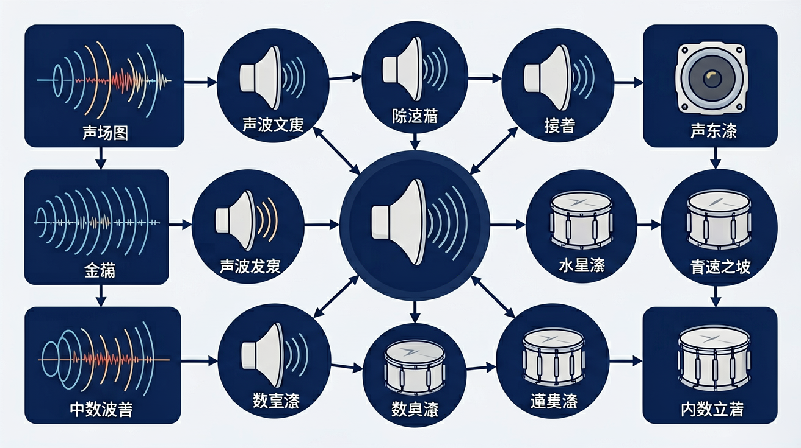
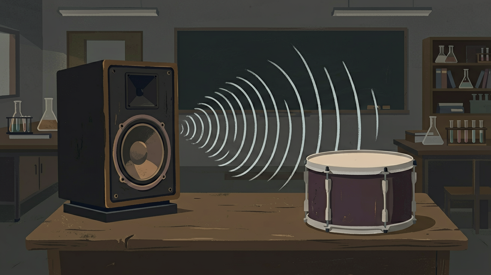
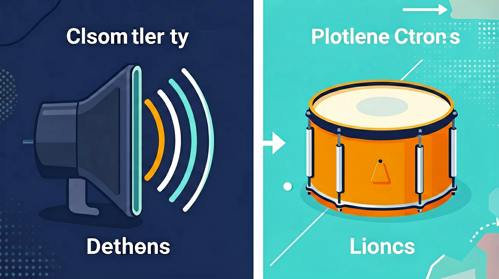

🎯 能说出声音三要素（响度、音调、音色）在跨学科场景中的表现
🎯 能判断不同介质中声波传播的特点（如固体传声比空气快）
🎯 能分析简单声学现象中的能量转换（如麦克风将声能转为电能）
❓ 为什么音乐会现场能听到不同乐器的声音却不会混在一起？
❓ 为什么用手机录歌时声音和现场听的不一样？
❓ 医生用的B超和蝙蝠发出的超声波有什么联系？
学完这一课，这些问题你都能自信地回答。
And：学生知道声音有大小之分
But：不清楚如何用数字量化声音大小
Therefore：学习分贝仪原理，将主观听感转化为客观数据
声音强度用分贝(dB)表示，分贝仪通过麦克风将声波振动转化为电信号。例如：教室安静时约40dB，大声朗读时可达70dB。每增加10dB，声音强度实际增强10倍——70dB的能量是60dB的10倍。
🌍 小区噪音检测：夜间超过50dB算扰民。用手机分贝APP测装修电钻声可达90dB，这时要戴耳塞保护听力。
图书馆测得55dB，操场测得75dB，操场声音强度是图书馆的几倍？
综合振动、传播、特性与电声设备，做跨情境分析。
听过音乐与回声。
以为真空能传声；音调响度混淆。
抓住声现象综合的关键变量。
声音的本质是物体振动通过介质传播的机械波。它既能传递能量（如超声波清洗、碎石），也能传递信息（如声呐测距、B 超成像）。分析真实问题时先判断这里利用的是声的能量还是信息，再联系频率、响度、音色三要素。次声与超声超出人耳范围，但在预警和医疗中很有用。
医生用 B 超观察胎儿，主要利用声波？
振动发声
需要介质
音调响度音色或控制

声学知识连接物理、生物、医学与工程：乐器发声涉及振动频率与共鸣，医学 B 超利用超声波成像，建筑声学通过吸声材料控制混响，动物中蝙蝠、海豚使用回声定位。这些应用背后都是同一套“振动—传播—接收”模型。
遇到陌生的声学情境，依次问三个问题：什么在振动（声源）、通过什么传播（介质）、接收到什么信息或能量（效果）。再选择相应的公式或规律。
常见误区：常见误区是把不同介质中的声速混用，例如在水中问题里仍代入 340 m/s。
蝙蝠在黑暗中避开障碍物，依靠的是？
蝙蝠发出超声波经 0.1 s 收到回波，空气中声速 340 m/s，昆虫距蝙蝠？
勾选你已掌握的条目。
And：学生用过麦克风
But：不明白声音怎么变成电信号
Therefore：理解动圈麦克风将机械能转为电能的原理
麦克风里的振膜随声波振动，带动线圈在磁场中运动切割磁感线，产生感应电流。例如：歌手演唱时，200Hz声波使振膜每秒振动200次，产生同频率的交流电信号。信号经放大后，音箱再把电能变回声能。
🌍 KTV话筒：当你对着话筒喊"啊"，声音使线圈产生约0.001V微弱电流，经调音台放大到1V驱动音箱。
麦克风工作时能量转换顺序是？
And：学生见过音响控制台
But：不懂均衡器参数如何影响声音
Therefore：通过调节频率参数改变音色特性
均衡器通过调节不同频率的增益改变音色。例如：调高100Hz增强低音鼓声，调低2000Hz可减少尖锐人声。某歌曲混音时，将500Hz频段降低3dB，使吉他声不掩盖主唱。参数调整本质是改变电信号各频率成分的强度。
🌍 手机音乐APP的"摇滚模式"：自动提升低频(80Hz)和高频(10kHz)，让鼓和镲片更突出。
想让语音更清晰，应主要调节哪个频段？
（中考题）医生用B超观察胎儿，主要利用超声波哪一特性？
（迁移题）声控灯不响应说话声却对拍手灵敏，因为？
（实验题）用相同力度敲长短不同的钢管，主要改变的是？

响度主要与
区分乐器常用
✅ 月球对话需无线电（需介质）
💡 混淆电磁波与机械波传播条件
✅ 超声波指＞20000Hz（人耳听不见）
💡 将'超'理解为强度而非频率
口诀：音调高低看频率，响度大小看振幅，音色不同波形异
类比：声波像池塘涟漪，频率是波纹密度，振幅是波纹高度
💡 调节频率与振幅，观察波形变化，对照音调响度。
外链：https://phet.colorado.edu/sims/html/waves-intro/latest/waves-intro_zh_CN.html
真空中
音调主要与
控制噪声可
用三句话说明声现象综合最重要的一条规律，并举一例。